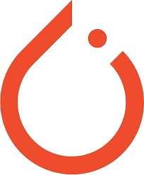

About Me
I'm an engineer passionate about combining computer science, innovation, and creative problem-solving to build impactful technology. From applied ML systems to theoretical projects, I bring persistence, curiosity, and a drive to turn ideas into actionable solutions.
Projects
Autonomous Algal Bloom Mitigation
Developing an ultrasonic emission system integrated with ML-based bloom detection to restore marine ecosystems autonomously.
Embedded Morse Code Transmitter
Used Arduino to send Morse code signals through an LED circuit while measuring real-time voltage and current variations.
ML-Based Sound Classifier
Trained a CNN model to distinguish instrument sounds using spectrograms, achieving over 90% accuracy on test data.
Skills

